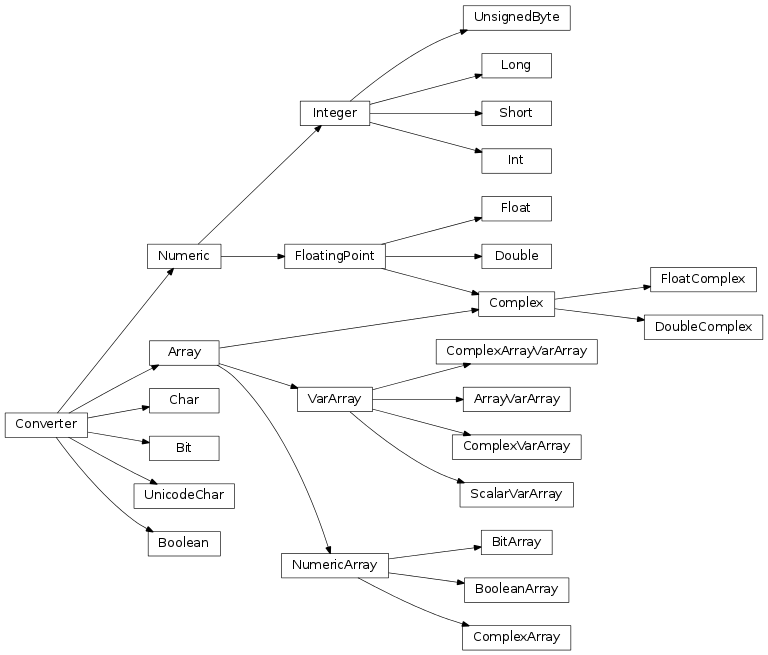

astropy.io.vo.converters: Conversions between XML and Numpy datatypes¶

This module handles the conversion of various VOTABLE datatypes to/from TABLEDATA and BINARY formats.
- astropy.io.vo.converters.get_converter(field, config={}, pos=None)[source]¶
Factory function to get an appropriate converter instance for a given field.
Parameters : field : astropy.io.vo.tree.Field
config : dict, optional
Parser configuration dictionary
pos : tuple
Position in the input XML file. Used for error messages.
Returns : converter : astropy.io.vo.converters.Converter

Previous topic
astropy.io.vo.xmlutil: XML-related utilities used by the library